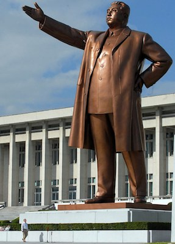
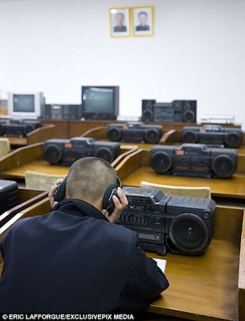
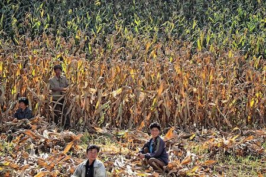
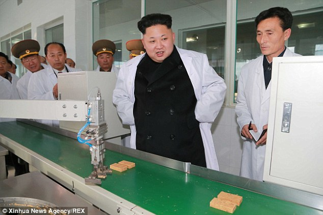
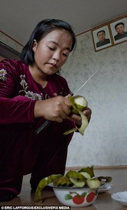
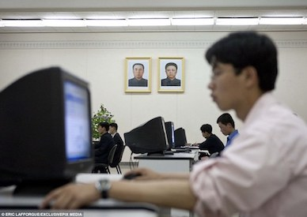
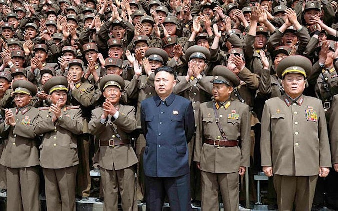
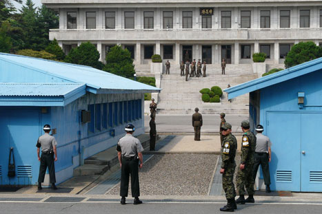

Top 8 Ways to Survive in North Korea
By Atharva Washimkar on March 27, 2017
In 1948, George Orwell published his world famous book 1984. In 1948, the Kim dynasty began its rule of North Korea. Coincidence? We think not. Under the rule of Kim Jong Un, North Korea has steadily continued its transformation into Big Brother 2.0, controlling every aspect of the lives of its citizens and meeting dissent with harsh punishments.
We got the chance to talk to a recent defector from North Korea, and we've compiled a list of the most important tips for surviving in the brutal conditions of the totalitarian climate.
#1. Don't Criticize the Government
They don't exactly want your feedback
Kim Jong Un and his regime rule with an iron fist, expelling all notions of freedom and forcing their citizens to follow their every command. So, it doesn't come as a surprise that deviation isn't taken very lightly.
Citizens who are critical of the government will be punished heavily. Not only them, but three whole generations of their family as well. Public executions happen on occasion, although its more likely to be sentenced to torture or death at concentration camps. Living conditions are like hell inside these camps, with malnutrition, physical labour and executions being extremely common. All in all, definitely not a place you'd want to visit.
This brings back some serious memories of 1984, where those who are disloyal to the Party are tortured and eventually killed in the Ministry of Love, as Winston found out the hard way. Public hangings are a thing in the book as well, where political opponents of the Party are killed for all to see (except Mrs.Parson's children who weren't allowed to go).

#2. Trust Nobody
They ain't got your back, Jack
Just like how the ThoughtPolice caught Winston and Julia when they least expected it, the secret police of North Korea blend into society, aiming to weed out those believed to be disloyal to the regime.
Raising your objections even in private conversation is a big no-no. People in North Korea are taught from childhood (Junior Spies anyone?) to hand over anyone who is even suspected of being dissident and being betrayed by your wife or husband or best friend is not uncommon. In addition, North Korea's secret police, the State Security Department, often taps phones and monitors individuals who are suspected of being disloyal to Kim Jong Un.
Whole families are taken away to camps in full view of everyone, in order to instill fear and obedience in the minds of other citizens. While Big Brother is a little more discrete, often choosing to capture them in the middle of the night, the sentiment is the same.

#3. Live in Pyongyang
Being a small-town girl won't help you here
Being the largest city in North Korea, the quality of life in Pyongyang is a lot higher than the quality of life anywhere else in the country. Access to resources such as water, food and electricity are much more common and reliable, and jobs are higher paying in that area as well.
Contrast this with the rural parts of North Korea, where you'll find low quality roads, less food and hard labour. Water is often hauled up to apartments from a communal well by foot as elevators in older buildings no longer work. Burning coal is used to heat and cook food, and any shortages in the coal supply means famine. All things considered, it's a no-brainer where you'd want to live.

#4. Save and Ration Wisely
Never know what could happen tomorrow...
Food shortages are relatively common in North Korea and it's wise to be prepared for when they occur. When a drought or flood hits, food is distributed by the government in certain amounts determined by your position in society. However, only the people at the top of the totem pole get enough food to comfortably live off, while everyone else has to hunt for scraps.
Rationing in Oceania was conducted due to the perpetual war and the Party's efforts to stay in power. Things like chocolate were made less and less available to the public by reducing rations. While society's elite, the Inner Party, were comfortable and didn't suffer a shortage of food or luxury, Outer Party members and proles had to make do with what they got.
Similarly, despite Kim's claims that he subsisted on a single bowl of rice a day during droughts (his $600,000 brandy collection says otherwise), you won't be able to live off the government supplied rations for long, and saving your supplies is the smart thing to do if you want to survive.
#5. Believe in the Propaganda
Drink that sweet, sweet Kool-Aid
The fact that country wide broadcasts are played each morning at 6 am, telling the citizens how lucky they are to live in North Korea makes this task pretty easy. All over North Korea, Kim Jong Un and his family are held up as god-like figures, who apparently invented the hamburger (who knew).
When couples get married, they can expect the "gift" of two portraits, one of Kim Il Sung and Kim Jong Il (the grandfather and father of Kim Jong Un). These portraits are hung everywhere in a Big Brother-esque manner and if you ask the citizens, they claim to be happy that they're in the presence of their great leaders. Countless billboards and posters bear military slogans and propaganda, while TV sets are hardwired to receieve only one signal, broadcast by the state.
If I didn't know better, I'd say North Korean leaders interpreted 1984 as a societal blueprint, rather than a bleak dystopia which mustwy be avoided. From the constant stream of propaganda, to the limiting of outside opinions, North Korea is eerily similar to the future depicted by Orwell, where Big Brother is seen as a godly figure who is workshipped by the citizens of Oceania.
In any case, in order to avoid arousing suspicion, it's probably in your best interest to keep the radio on, and at least pretend to listen. Won't be hard, because radios in North Korea don't always turn off.

#6. Get Involved in Politics
Selling your soul for a better life might be worth it
Now, hear me out here. It's a well known fact that those in positions of power often have a higher quality of life compared to other citizens. This was true in 1984, where members of the Inner Party were given privileges that members of the Outer Party and proles didn't have access to, and it's certainly true in North Korea.
Deciding which political party to join is a pretty easy task, considering there's only one: the Worker's Party of Korea. Joining and rising up the ranks will allow you and your family to live a more comfortable life, despite the fact that you'll have to sell your morals by carrying out unethical orders given by higher-ups. Whether you're OK with that is up to you...
#7. Hate on South Korea
Why wouldn't anyone want to live in North Best Korea?
A lot of the propaganda in North Korea talks about how great North Korea is, and how they have nothing to envy from other countries. False claims that famine and homelessness are widespread in America and South Korea are rampant and often repeated by those in power. By creating a sense of nationalism, the citizens are brainwashed, as they may believe that their quality of life is better than others.
Similar to 1984, where the proles don't start an uprising (despite having the capabilities to) due to the fact that they don't realize that their quality of life is lacking, and are therefore relatively docile while the Party erodes the rights of its citizens.
While many North Koreans do know to some extent, that life outside North Korea isn't quite like how it's portrayed by the government, out of fear for their safety, they remain complacent with the lies. While it's not the same thing as starting a revolution, repeating the propaganda of the government is a surefire way to stay safe and off the government's radar.

#8. Leave
Really, what are you waiting for?
OK, lets be honest: if you live in North Korea and aren't a high ranking government official, your life probably sucks. This is similar to 1984, in that quality of life is low, and Oceania is all but impossible to leave (even if you did leave, the other two superstates were no better). However, North Koreans have a slight advantage of the citizens of Oceania, as almost any country offers a better life than North Korea.
However, leaving is easier said than done. Simply crossing the border into South Korea is all but impossible, and if caught, you can kiss you and your family goodbye. That being said, smuggling defectors out of North Korea has become an international industry. Most defectors go to South Korea, but they have to go the long way, through China, then to Vietnam and finally to South Korea. The risks are great: if any of the people helping you happen to be loyal to Kim Jong Un, you'll earn a one-way ticket to a labour camp. In summary, leaving North Korea is sort of like skipping class, except when you're caught you'll be sentenced to death rather than detention.